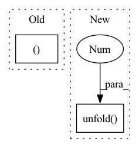

Pattern ID :10532

Before Change
x = torch.randn(4, 4, 1)
y = torch.randn(4, 4, 2)
return (
x[0, 2:],
x.detach(),
x.detach_(),
x.diagonal(),
x.expand(-1, -1, 3),
x.expand_as(y),
x.select(0, 1),
x.unflatten(1, (2, 2)),
x.unfold(1, 2, 2),
x.view(16),
x.view_as(torch.randn(16)),
)
After Change
x.expand_as(y),
x.select(0, 1),
x.unflatten(1, (2, 2)),
x.unfold(1, 2, 2),
x.view(16),
x.view_as(torch.randn(16)),
)
In pattern: SUPERPATTERN
Frequency: 3
Non-data size: 2
Instances
Fragment ID: 36681927
Project Name: pytorch/pytorch
Commit Name: 91ef3c82615d6ede05d5b86f1bd5571ea95e4ef1
Time: 2022-03-28
Author: linbin@fb.com
File Name: test/mobile/model_test/tensor_ops.py
M Class Name: TensorViewOpsModule
N Class Name: TensorViewOpsModule
M Method Name: tensor_view_ops(1)
N Method Name: tensor_view_ops(1)
M Parent Class: torch.nn.Module
N Parent Class: torch.nn.Module
M File Name: test/mobile/model_test/tensor_ops.py
N File Name: test/mobile/model_test/tensor_ops.py
M Start Line: 265
M End Line: 277
N Start Line: 263
N End Line: 277
'>
Before Change
duration = self.audio.get_duration(self.file)
window = SlidingWindow(start=0., duration=self.duration, step=self.step, end=duration)
for chunk in window:
waveform, sample_rate = self.audio.crop(self.file, chunk, fixed=self.duration)
yield waveform
After Change
def to_iterable(self):
waveform, _ = self.audio(self.file)
chunks = rearrange(
waveform.unfold(1, self.window_samples, self.step_samples),
"channel chunk frame -> chunk channel frame",
).numpy()
for i, chunk in enumerate(chunks):
'>
Fragment ID: 36681924
Project Name: juanmc2005/streamingspeakerdiarization
Commit Name: 2cb1554d30e10edc01016d88c4b402c05bd6b05c
Time: 2021-12-21
Author: juanmc2005@hotmail.com
File Name: src/diart/sources.py
M Class Name: ReliableFileAudioSource
N Class Name: ReliableFileAudioSource
M Method Name: to_iterable(1)
N Method Name: to_iterable(1)
M Parent Class: FileAudioSource
N Parent Class: FileAudioSource
M File Name: src/diart/sources.py
N File Name: src/diart/sources.py
M Start Line: 52
M End Line: 56
N Start Line: 73
N End Line: 84
'>
Before Change
x = torch.randn(4, 4, 1)
y = torch.randn(4, 4, 2)
return (
x[0, 2:],
x.detach(),
x.detach_(),
x.diagonal(),
x.expand(-1, -1, 3),
x.expand_as(y),
x.select(0, 1),
x.unflatten(1, (2, 2)),
x.unfold(1, 2, 2),
x.view(16),
x.view_as(torch.randn(16)),
)
After Change
x.expand_as(y),
x.select(0, 1),
x.unflatten(1, (2, 2)),
x.unfold(1, 2, 2),
x.view(16),
x.view_as(torch.randn(16)),
)
'>
Fragment ID: 36681923
Project Name: pytorch/pytorch
Commit Name: 28a4b4759add0b3eb0f4c34a1e042be4f93e976e
Time: 2022-03-30
Author: linbin@fb.com
File Name: test/mobile/model_test/tensor_ops.py
M Class Name: TensorViewOpsModule
N Class Name: TensorViewOpsModule
M Method Name: tensor_view_ops(1)
N Method Name: tensor_view_ops(1)
M Parent Class: torch.nn.Module
N Parent Class: torch.nn.Module
M File Name: test/mobile/model_test/tensor_ops.py
N File Name: test/mobile/model_test/tensor_ops.py
M Start Line: 265
M End Line: 277
N Start Line: 263
N End Line: 277